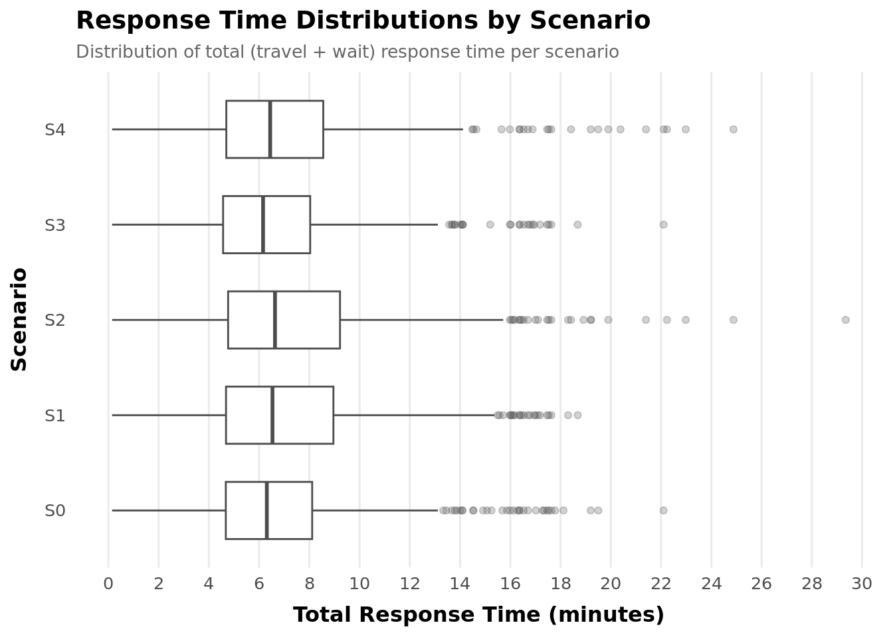

# ---- CHUNK 1 (revised): Setup & Normalize using UA travel times only ----library(tidyverse)
── Attaching core tidyverse packages ──────────────────────── tidyverse 2.0.0 ──
✔ dplyr 1.1.4 ✔ readr 2.1.5
✔ forcats 1.0.0 ✔ stringr 1.5.1
✔ ggplot2 3.5.1 ✔ tibble 3.2.1
✔ lubridate 1.9.3 ✔ tidyr 1.3.1
✔ purrr 1.0.2
── Conflicts ────────────────────────────────────────── tidyverse_conflicts() ──
✖ dplyr::filter() masks stats::filter()
✖ dplyr::lag() masks stats::lag()
ℹ Use the conflicted package (<http://conflicted.r-lib.org/>) to force all conflicts to become errors
library(lubridate)# Load the .RData (whatever object name is inside)objs_loaded <-load("emsData.RData")ems <-if ("ems"%in% objs_loaded) get("ems") elseif ("x"%in% objs_loaded) get("x") elsestop("No 'ems' or 'x' in emsData.RData")# Helper: safely coerce to POSIXct if not alreadyto_posix <-function(x) if (inherits(x, "POSIXt")) x elseymd_hms(x, quiet =TRUE)# Ensure UA columns exist (create as NA if missing so mutate won’t error)ua_needed <-c("eTT.UA.Ce", "eTT.UA.So", "eTT.UA.NN", "eTT.UA.FN")for (nm in ua_needed) if (!nm %in%names(ems)) ems[[nm]] <-NA_real_# Build standardized incident tableems_std <- ems %>%mutate(dispatch_at =to_posix(DT.DISP),clear_at =to_posix(DT.AVAILABLE),service_secs =as.numeric(difftime(clear_at, dispatch_at, units ="secs")),# UA travel times only (seconds); keep as numerictt_central = eTT.UA.Ce,tt_south = eTT.UA.So,tt_near_north = eTT.UA.NN,tt_far_north = eTT.UA.FN ) %>%arrange(dispatch_at) %>%group_by(dispatch_at) %>%slice(1) %>%# one row per incident (first record at that dispatch time)ungroup() %>%mutate(incident_id =row_number()) %>%select( incident_id, dispatch_at, clear_at, service_secs, REF.GRID, DISPATCH.PRIORITY.NAME, BASE.NAME, VEH.GRID, tt_central, tt_south, tt_near_north, tt_far_north )# Light checks so we know what we havemessage("Rows: ", nrow(ems_std))
# Boxplot of response times by scenario (cap extreme tails for readability)plot_df <- sim_results_clean %>%mutate(scenario =factor(scenario, levels =sort(unique(scenario))))ggplot(plot_df, aes(x = scenario, y = total_response_secs)) +geom_boxplot(outlier.alpha =0.2) +scale_y_continuous("Total Response (s)",labels = scales::label_number(accuracy =1)) +labs(title ="Response Time Distributions by Scenario") +theme_minimal()
# Boxplotggplot(plot_df, aes(x = scenario, y = total_response_secs)) +geom_boxplot(outlier.alpha =0.2) +scale_y_continuous("Total Response (s)",labels = scales::label_number(accuracy =1)) +labs(title ="Response Time Distributions by Scenario") +theme_minimal()

# ECDFggplot(sim_results_clean, aes(x = total_response_secs, color = scenario)) +stat_ecdf(geom ="step") +scale_x_continuous("Total Response (s)",labels = scales::label_number(accuracy =1)) +labs(title ="ECDF of Total Response Times") +theme_minimal()
# ---- CHUNK 6b: Logistic models for on-time performance ----# Uses sim_results_clean (travel+wait only) created at end of Chunk 4library(tidyverse)logit_df <- sim_results_clean %>%transmute( incident_id,scenario =factor(scenario),rt_sec =as.numeric(total_response_secs),ontime_8 =as.integer(rt_sec <=8*60),ontime_10 =as.integer(rt_sec <=10*60) ) %>%# keep rows where the binary outcomes are definedfilter(!is.na(ontime_8), !is.na(ontime_10)) %>%mutate(scenario =relevel(scenario, ref ="S1"))use_lme4 <-requireNamespace("lme4", quietly =TRUE)
Warning in check_dep_version(): ABI version mismatch:
lme4 was built with Matrix ABI version 2
Current Matrix ABI version is 1
Please re-install lme4 from source or restore original 'Matrix' package
if (use_lme4) {library(lme4)# Mixed-effects logistic (random intercept by incident) m8 <-glmer(ontime_8 ~ scenario + (1| incident_id),data = logit_df, family =binomial(link ="logit"),control =glmerControl(optimizer ="bobyqa")) m10 <-glmer(ontime_10 ~ scenario + (1| incident_id),data = logit_df, family =binomial(link ="logit"),control =glmerControl(optimizer ="bobyqa"))cat("\n--- Mixed-effects logistic: ≤ 8 minutes (baseline S1) ---\n")print(summary(m8))cat("\n--- Mixed-effects logistic: ≤ 10 minutes (baseline S1) ---\n")print(summary(m10))# Odds ratios with 95% CIs or_ci <-function(mod) { est <-suppressWarnings(coef(summary(mod)))tibble(term =rownames(est),OR =exp(est[, "Estimate"]),LCL =exp(est[, "Estimate"] -1.96*est[, "Std. Error"]),UCL =exp(est[, "Estimate"] +1.96*est[, "Std. Error"]) ) %>%filter(term !="(Intercept)") %>%mutate(scenario =sub("^scenario", "", term)) %>%select(scenario, OR, LCL, UCL) } or8 <-or_ci(m8) or10 <-or_ci(m10)# Scenario-level predicted probabilities (marginal at typical incident) invlogit <-function(x) 1/(1+exp(-x)) pred_tbl <-function(mod, title) { cf <-fixef(mod) # fixed effects scs <-levels(logit_df$scenario)tibble(scenario = scs) %>%mutate(lp = cf["(Intercept)"] +c(0, cf[paste0("scenarios", scs[-1])]),# above line assumes contrast naming like scenarioS2, S3, ...# safer approach (handles any contrast names):lp =map_dbl(scenario, ~{if (.x == scs[1]) cf["(Intercept)"]else { nm <-names(cf)[grepl("^scenario", names(cf)) &grepl(.x, names(cf))] cf["(Intercept)"] +if (length(nm)==1) cf[nm] else0 } }),p =invlogit(lp) ) %>%select(scenario, p) %>%arrange(scenario) %>%mutate(model = title) } preds8 <-pred_tbl(m8, "≤8 min") preds10 <-pred_tbl(m10, "≤10 min")# Save outputs readr::write_csv(or8, "logit_or_le8min.csv") readr::write_csv(or10, "logit_or_le10min.csv")bind_rows(preds8, preds10) %>% readr::write_csv("logit_pred_probs_by_scenario.csv")} else {# Fallback: fixed-effects logistic with cluster-robust SE by incident (no random effects)# Requires fixest >= 0.11.2if (!requireNamespace("fixest", quietly =TRUE)) {stop("Neither lme4 nor fixest are available. Install one of them to run logistic models.") }library(fixest) fe8 <-feglm(ontime_8 ~i(scenario, ref ="S1") | incident_id,data = logit_df, family ="logit", cluster =~ incident_id) fe10 <-feglm(ontime_10 ~i(scenario, ref ="S1") | incident_id,data = logit_df, family ="logit", cluster =~ incident_id)cat("\n--- Fixed-effects logistic (clustered): ≤ 8 minutes ---\n"); print(summary(fe8))cat("\n--- Fixed-effects logistic (clustered): ≤ 10 minutes ---\n"); print(summary(fe10))# Odds ratios or_tbl <-function(mod) { co <- broom::tidy(mod) %>%filter(str_detect(term, "scenario::")) %>%mutate(scenario =sub("^i\\(scenario, ref = \"S1\"\\)::", "", term),OR =exp(estimate),LCL =exp(estimate -1.96*std.error),UCL =exp(estimate +1.96*std.error) ) %>%select(scenario, OR, LCL, UCL) co }if (!requireNamespace("broom", quietly =TRUE)) install.packages("broom")library(broom) or8 <-or_tbl(fe8) or10 <-or_tbl(fe10)# Predicted probabilities by scenario (marginal effects at means) invlogit <-function(x) 1/(1+exp(-x)) pred_tbl_fixest <-function(mod, title) { scs <-levels(logit_df$scenario)# Get baseline intercept (fixest hides fixed effects; use S1 coefficient = 0 reference)tibble(scenario = scs) %>%mutate(beta =ifelse(scenario =="S1", 0,coef(mod)[paste0("i(scenario, ref = \"S1\")::", scenario)] %||%0),# center at average FE (approximate marginal): works for comparisonsp =invlogit(beta) ) %>%select(scenario, p) %>%arrange(scenario) %>%mutate(model = title) }`%||%`<-function(a,b) if (!is.null(a)) a else b preds8 <-pred_tbl_fixest(fe8, "≤8 min") preds10 <-pred_tbl_fixest(fe10, "≤10 min") readr::write_csv(or8, "logit_or_le8min.csv") readr::write_csv(or10, "logit_or_le10min.csv")bind_rows(preds8, preds10) %>% readr::write_csv("logit_pred_probs_by_scenario.csv")}
Loading required package: Matrix
Attaching package: 'Matrix'
The following objects are masked from 'package:tidyr':
expand, pack, unpack
--- Mixed-effects logistic: ≤ 8 minutes (baseline S1) ---
Generalized linear mixed model fit by maximum likelihood (Laplace
Approximation) [glmerMod]
Family: binomial ( logit )
Formula: ontime_8 ~ scenario + (1 | incident_id)
Data: logit_df
Control: glmerControl(optimizer = "bobyqa")
AIC BIC logLik deviance df.resid
1595.0 1629.8 -791.5 1583.0 2439
Scaled residuals:
Min 1Q Median 3Q Max
-3.4679 -0.0787 0.0068 0.0140 2.2788
Random effects:
Groups Name Variance Std.Dev.
incident_id (Intercept) 181.9 13.49
Number of obs: 2445, groups: incident_id, 489
Fixed effects:
Estimate Std. Error z value Pr(>|z|)
(Intercept) 9.85305 0.55860 17.639 < 2e-16 ***
scenarioS2 -1.44722 0.31549 -4.587 4.49e-06 ***
scenarioS3 -2.06239 0.31999 -6.445 1.16e-10 ***
scenarioS4 0.05186 0.32195 0.161 0.8720
scenarioS5 -0.77584 0.31449 -2.467 0.0136 *
---
Signif. codes: 0 '***' 0.001 '**' 0.01 '*' 0.05 '.' 0.1 ' ' 1
Correlation of Fixed Effects:
(Intr) scnrS2 scnrS3 scnrS4
scenarioS2 -0.435
scenarioS3 -0.524 0.587
scenarioS4 -0.282 0.506 0.498
scenarioS5 -0.358 0.543 0.548 0.508
--- Mixed-effects logistic: ≤ 10 minutes (baseline S1) ---
Generalized linear mixed model fit by maximum likelihood (Laplace
Approximation) [glmerMod]
Family: binomial ( logit )
Formula: ontime_10 ~ scenario + (1 | incident_id)
Data: logit_df
Control: glmerControl(optimizer = "bobyqa")
AIC BIC logLik deviance df.resid
1125.4 1160.2 -556.7 1113.4 2439
Scaled residuals:
Min 1Q Median 3Q Max
-3.09431 0.00469 0.00719 0.01143 2.15944
Random effects:
Groups Name Variance Std.Dev.
incident_id (Intercept) 153.9 12.41
Number of obs: 2445, groups: incident_id, 489
Fixed effects:
Estimate Std. Error z value Pr(>|z|)
(Intercept) 10.2128 0.5966 17.119 < 2e-16 ***
scenarioS2 -1.3369 0.3665 -3.647 0.000265 ***
scenarioS3 -1.7304 0.3683 -4.699 2.61e-06 ***
scenarioS4 0.4456 0.3867 1.152 0.249146
scenarioS5 -0.4079 0.3696 -1.104 0.269721
---
Signif. codes: 0 '***' 0.001 '**' 0.01 '*' 0.05 '.' 0.1 ' ' 1
Correlation of Fixed Effects:
(Intr) scnrS2 scnrS3 scnrS4
scenarioS2 -0.456
scenarioS3 -0.515 0.581
scenarioS4 -0.276 0.487 0.481
scenarioS5 -0.351 0.531 0.532 0.490
cat("\n--- Predicted probabilities by scenario ---\n"); print(bind_rows(preds8, preds10))
--- Predicted probabilities by scenario ---
# A tibble: 10 × 3
scenario p model
<chr> <dbl> <chr>
1 S1 1.00 ≤8 min
2 S2 1.00 ≤8 min
3 S3 1.00 ≤8 min
4 S4 1.00 ≤8 min
5 S5 1.00 ≤8 min
6 S1 1.00 ≤10 min
7 S2 1.00 ≤10 min
8 S3 1.00 ≤10 min
9 S4 1.00 ≤10 min
10 S5 1.00 ≤10 min
# ---- CHUNK 7 (robust): Diagnostics ----safe_re <-function(mod, grp ="incident_id") {if (!inherits(mod, "merMod")) return(numeric(0)) re_list <-try(lme4::ranef(mod, condVar =FALSE), silent =TRUE)if (inherits(re_list, "try-error")) return(numeric(0))if (!grp %in%names(re_list)) return(numeric(0)) vec <-suppressWarnings(as.numeric(re_list[[grp]][,"(Intercept)"])) vec[is.finite(vec)]}# ----- Seconds model -----if (exists("m") &&inherits(m, "merMod")) {par(mfrow =c(1, 2), las =1)# Residuals vs Fittedplot(fitted(m), resid(m),xlab ="Fitted (s)", ylab ="Residuals (s)",main ="Residuals vs Fitted (seconds)")abline(h =0, col ="gray60")# QQ plot residualsqqnorm(resid(m), main ="QQ Plot Residuals (seconds)")qqline(resid(m), col ="gray60")# Random effects QQ (only if available) re_int <-safe_re(m, "incident_id")if (length(re_int) >1) {par(mfrow =c(1, 1), las =1)qqnorm(re_int, main ="QQ Plot Random Intercepts (seconds)")qqline(re_int, col ="gray60") } else {message("Skipped random-effects QQ (seconds): no finite random effects to plot.") }}# ----- Log-seconds model -----if (exists("m_log") &&inherits(m_log, "merMod")) {par(mfrow =c(1, 2), las =1)# Residuals vs Fittedplot(fitted(m_log), resid(m_log),xlab ="Fitted log(s)", ylab ="Residuals",main ="Residuals vs Fitted (log seconds)")abline(h =0, col ="gray60")# QQ plot residualsqqnorm(resid(m_log), main ="QQ Plot Residuals (log seconds)")qqline(resid(m_log), col ="gray60")# Random effects QQ (only if available) re_int_log <-safe_re(m_log, "incident_id")if (length(re_int_log) >1) {par(mfrow =c(1, 1), las =1)qqnorm(re_int_log, main ="QQ Plot Random Intercepts (log)")qqline(re_int_log, col ="gray60") } else {message("Skipped random-effects QQ (log): no finite random effects to plot.") }}